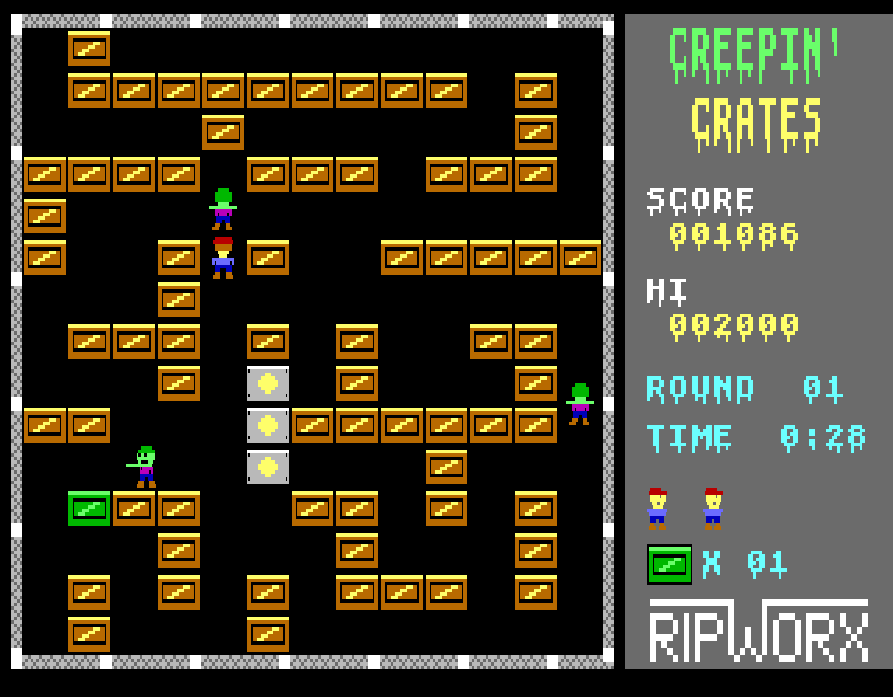
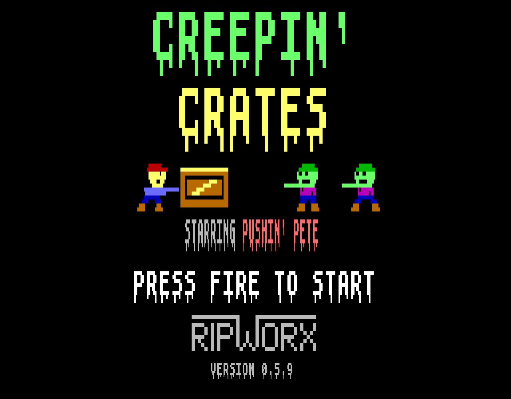
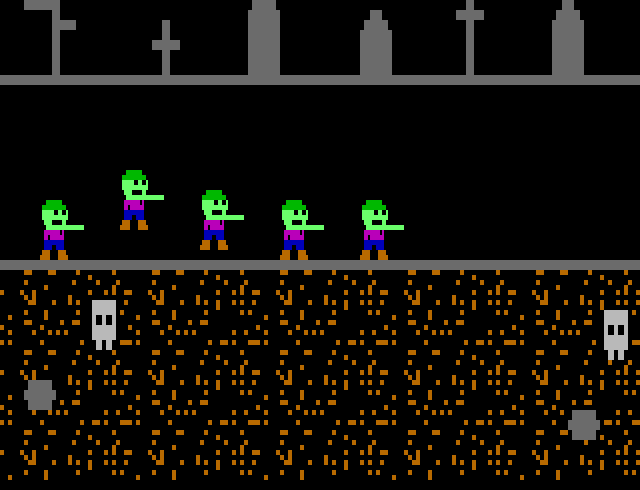
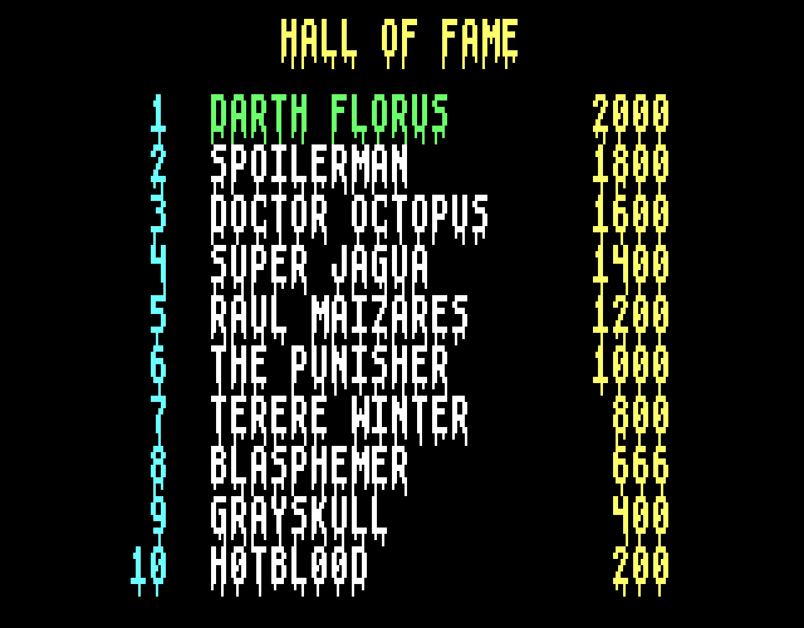

THE CRATE YARDEL DEPÓSITO DE CAJAS
Every night, when the moon comes up, the crates behind the old cemetery start to twitch, and out climb the zombies. Pushin' Pete can't fight them with his hands: push a crate and it slides until it hits something, squashing every zombie in its way.
Cada noche, cuando sale la luna, las cajas detrás del viejo cementerio empiezan a sacudirse, y de adentro salen los zombis. Pushin' Pete no puede pelear con las manos: empuja una caja y se desliza hasta chocar con algo, aplastando a cada zombi que encuentre en el camino.
Made for the 80-column screen of the Commodore 128, with its VDC chip in graphics mode, music for the SID chip and four intermission scenes.
Hecho para la pantalla de 80 columnas de la Commodore 128, con su chip VDC en modo gráfico, música para el chip SID y cuatro escenas intermedias.

ON REAL HARDWAREEN LA MÁQUINA REAL
Creepin' Crates works fine in the VICE emulator, but on a real Commodore 128 it doesn't look right yet: bars show up on the screen. We are looking for the cause. If you try it on your machine, please tell us how it looks: you'll find Carlos on Discord as czayas.
Creepin' Crates anda bien en el emulador VICE, pero en una Commodore 128 real todavía no se ve como debe: aparecen barras en la pantalla. Estamos buscando la causa. Si lo pruebas en tu máquina, cuéntanos cómo se ve: encuentras a Carlos en Discord como czayas.
SCREENSPANTALLAS



DOWNLOADDESCARGA
Version 1.0.0 · 11.1 MBVersión 1.0.0 · 11,1 MB
What's inside
Qué trae
.d64disk image, where the game also saves the Hall of Fame- The instruction manual in English and in Spanish, for the screen and for printing on A4 (PDF)
- Imagen de disco
.d64, donde el juego también guarda el salón de la fama - El manual de instrucciones en español y en inglés, para la pantalla y para imprimir en A4 (PDF)
What you need
Qué necesitas
A Commodore 128 with the 64 KB VDC chip (the one in the metal C128D, or an upgraded one: with 16 KB the game tells you so and won't start) and an 80-column RGBI monitor. A 1571 or 1541 disk drive, or an SD2IEC, Pi1541 or Ultimate. A joystick in either port, or just the keyboard. Or the VICE emulator (x128) with the 64 KB VDC.
Una Commodore 128 con el chip VDC de 64 KB (el de la C128D de chapa, o uno ampliado: con 16 KB el juego avisa y no arranca) y un monitor RGBI de 80 columnas. Una disquetera 1571 o 1541, o una SD2IEC, Pi1541 o Ultimate. Un joystick en cualquier puerto, o solo el teclado. O el emulador VICE (x128) con el VDC de 64 KB.
How to load it
Cómo cargarlo
In 128 mode, on the 80-column screen, type RUN"CREEPIN' CRATES" (the
apostrophe is SHIFT+7). It takes about 8 seconds to load with a 1571, and about half a minute
with a 1541. In VICE, open the .d64 in x128 with the 80-column screen and the
64 KB VDC.
En el modo 128, en la pantalla de 80 columnas, escribe
RUN"CREEPIN' CRATES" (el apóstrofo es SHIFT+7). Tarda unos 8 segundos en cargar con
una 1571, y alrededor de medio minuto con una 1541. En VICE, abre el .d64 en x128
con la pantalla de 80 columnas y el VDC de 64 KB.
Instruction manual (PDF, 3.2 MB)
Manual de instrucciones (PDF, 3,2 MB)
Share it
Compártelo
You may copy and share the zip and everything in it, free of charge and for non-commercial purposes, as is and crediting its authors: CC BY-NC-ND 4.0 license.
Puedes copiar y compartir el zip y todo lo que trae, gratis y sin fines comerciales, tal cual y diciendo quiénes son sus autores: licencia CC BY-NC-ND 4.0.
Checksum: SHA256SUMSSuma de verificación: SHA256SUMS